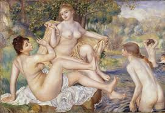
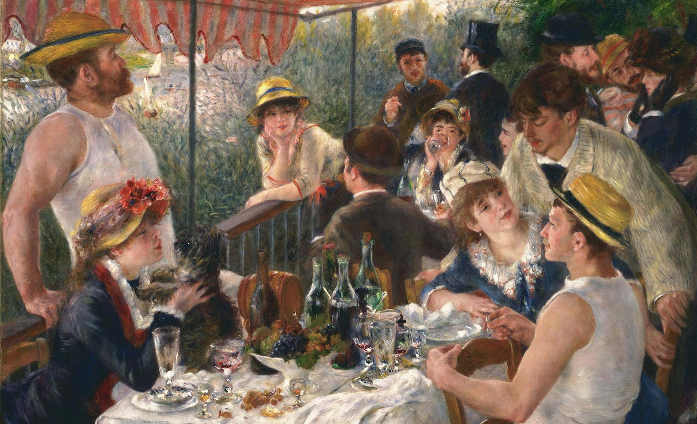
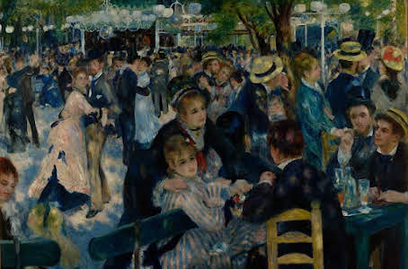
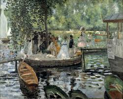
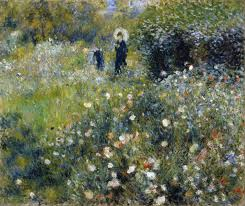
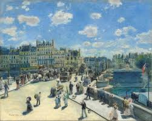

Pierre-Auguste Renoir
Pierre-Auguste Renoir è stato un pittore francese, considerato uno tra i massimi esponenti dell'Impressionismo. Indaga la realtà e gli effetti della luce con la sperimentazione en plein air. Predilige la figura umana, soprattutto i soggetti della vita parigina, più che paesaggi all'aria aperta. Mantiene una versatilità estrema nella scelta dei soggetti e nella tecnica pittorica.
     